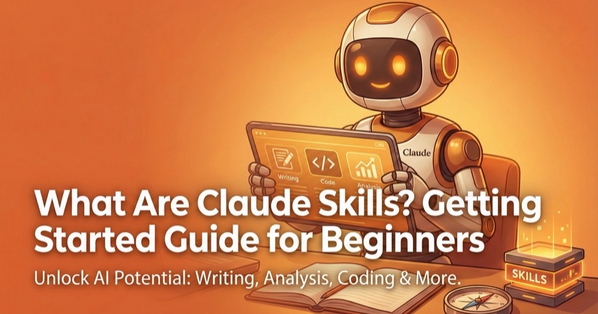
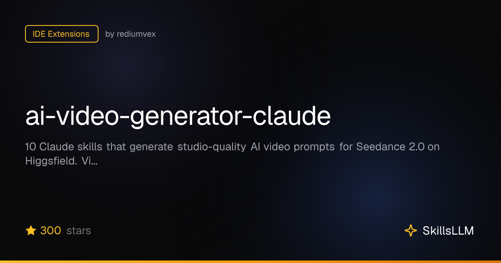
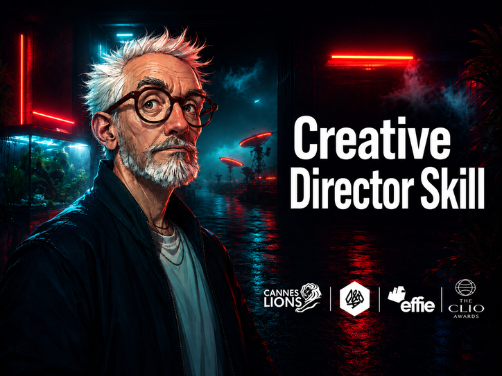
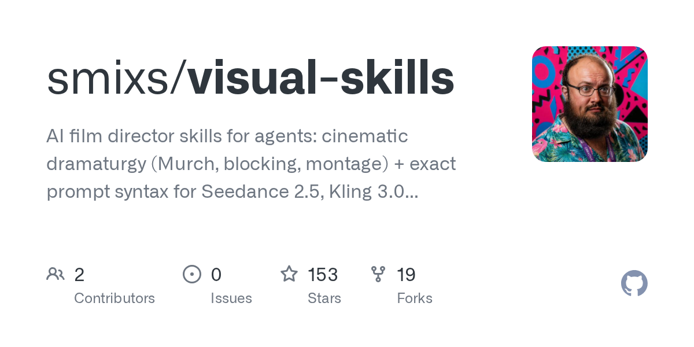

08-27youtube.com/watch?v=mwb07_HrmpM&t=1s
youtube.com/watch?v=mwb07_HrmpM&t=1s
슬랙 아카이브 · 총 303건 · 마지막 갱신 2026-08-27 16:40 (KST)
youtube.com/watch?v=mwb07_HrmpM&t=1s
reddit.com/r/Seedance_AI/…/make_money_with_ai_video_content_creators_should
reddit.com/r/comfyui/s/5CHzyeltQj
reddit.com/r/Seedance_AI/s/RQMlioMsJP
reddit.com/r/GaussianSplatting/…/gaussiancrowds_relightable_realtime_4dgs_at_scale?share_id=…
youtube.com/watch?v=OJkNlT5B-5M
reddit.com/r/vfx/s/aPXIsKxVy8
reddit.com/r/comfyui/s/BgwgpG68lb
https://www.instagram.com/reel/Dbz8oyWJFy2/?igsh=MXNiaDI4NnJpbGlheA==
*Seedance 2.5 comes apart into layers, inside After Effects.* Fossa Animation's Tether separates the generated shot. The character lifts off as its own layer, the background gets rebuilt underneath it, and both land in the timeline as footage you can move, mask, retime, regenerate with, and grade. That is the part that has been missing. Generated video shows up as one flat frame, so the moment you want to change a single thing, you regenerate the whole shot and hope. Decompose is in private beta, not in the public build yet.
*InSpatio-World* The first 4D world model conditioned on reference videos- transforming any video into a dynamic world you can freely explore, navigate, and revisit.
Built a screen replacement pipeline in ComfyUI. You can track a screen in any video, drop in new content, get it back tracked, warped, depth-aware blur and reflection, and color-matched to the shot. Took way more debugging than expected. No After Effects, no Mocha, just custom ComfyUI nodes built from scratch.
yufu-wang.github.io/duomo DuoMo: Dual Motion Diffusion for World-Space Human Reconstruction mikeqzy.github.io/MoRo Masked Modeling for Human Motion Recovery Under Occlusions fanegg.github.io/Human3R Human3R: Everyone Everywhere All at Once
github.com/NVlabs/GENMO?… github.com/fanegg/Human3R
higgsfield.ai/blog/ai-vs-vfx?invite_code=erikchallenge-higgsf…
youtube.com/watch?v=weXc-JGwewo 유튜브 기본 자막의 품질이 좋지 않아, 아래 폴더에 클로드를 활용해 한글 자막을 추가해두었습니다. 영상이 다소 길지만 내용이 좋은 세미나 영상이니, 시간 되실 때 천천히 전체 시청해보시면 좋을 것 같습니다. ========================================= P:\graphic\library\영상\Tutorial\AI\seminar =========================================
claudeskills.info/skills/OSideMedia/higgsfield-ai-prompt-skill/higgsfield-seedance-vfx skillsllm.com/skill/ai-video-generator-claude github.com/smixs/creative-director-skill github.com/smixs/visual-skills 본체 `SKILL.md`는 얇은 라우터이고, 그 장치는 에이전트가 순서대로 불러와야 하는 참조 파일 속에 존재합니다. 1. 극작술 ( `dramaturgy.md`) — 장면 구성, 박자, 샷 기능, 리듬. 2. 보편적 규칙 ( `universal-rules.md`) — 모든 모델에 적용되는 12가지 규칙: 프롬프트 골격, 캐릭터 앵커, 보여주되 말하지 않기, 지속 시간 규율, 최종 이미지 규칙. 3. 하나의 모델 파일 — `seedance.md`또는 `kling.md`: `veo.md`정확한 구문, 멀티샷 마커, 대화 프로토콜, 참조 태그, 수정 사항이 포함된 오류 모드. 4. 필요에 따라 작업 모듈 제공 - 스토리보드 및 역할 모드, 애니매틱 키프레임, 속도 및 진행 문법, 장르 패턴, 프롬프트 수정 골격, 카메라 및 조명 용어. 5. 출력 전 두 가지 필수 검사가 있습니다 . 6가지 핵심 사항에 대한 극적 구성 검사와 모든 장면에 대한 3가지 세부 사항 검토입니다. 이 중 하나라도 통과하지 못한 프롬프트는 출하되지 않습니다.

claudeskills.infoai-video-generator-claude - IDE Extensions on GitHub | SkillsLLM
skillsllm.comGitHub - smixs/creative-director-skill: World-class creative director in a skill. Methodology-driven ideation (SIT, TRIZ
github.comGitHub - smixs/visual-skills: AI film director skills for agents: cinematic dramaturgy (Murch, blocking, montage) + exac
github.comyoutube.com/watch?v=FwxTpOkmRik
Claude Code는 프로젝트 구조가 Claude에게 작업 방식을 가르쳐줄 때 훨씬 더 강력해집니다. 잘 구성된 프로젝트는 Claude에게 지속적인 컨텍스트, 제어된 도구 접근 권한, 재사용 가능한 워크플로, 전문화된 에이전트, 그리고 자동화된 안전 점검을 제공합니다. 그 기반은 *CLAUDE.md*입니다. `CLAUDE.md`는 세션이 시작될 때 자동으로 로드되며, 프로젝트 개요, 기술 스택, 아키텍처, 명령어, 코딩 규칙 등을 정의합니다. 개인별 또는 로컬 환경 전용 설정은 *CLAUDE.local.md*에 별도로 저장할 수 있습니다. 그 이후에는 각 구성 요소가 고유한 역할을 담당합니다. • *.mcp.json*: GitHub, Jira, Slack, 데이터베이스 등 외부 시스템과 Claude Code를 연결합니다. • *settings.json*: 권한, 도구 접근, 모델 선택, 훅(Hooks) 등을 제어하며, 개발자별 로컬 설정도 지원합니다. • *rules/*: 코드 스타일, 테스트 방식, API 규칙 등 주제별 코딩 표준을 분리하여 관리합니다. • *commands/*: 코드 리뷰나 이슈 해결과 같은 반복 작업을 슬래시 명령으로 재사용할 수 있도록 합니다. • *skills/*: 필요한 작업에서만 특정 지식을 불러와 활성 컨텍스트를 가볍고 집중된 상태로 유지합니다. • *agents/*: 코드 리뷰어, 보안 감사자 등 역할이 분리된 전문 서브 에이전트를 정의하며, 각각 독립적인 역할, 도구, 모델 설정을 가질 수 있습니다. • *hooks/*: 도구 실행 전후에 스크립트를 자동으로 실행하여 검증, 포맷팅, 린트, 안전성 검사 등을 수행합니다. 진정한 장점은 *일관성*입니다. 더 이상 모든 프롬프트에서 같은 지시를 반복할 필요가 없습니다. 프로젝트 자체가 Claude에게 필요한 컨텍스트, 규칙, 워크플로, 그리고 안전장치를 제공합니다. 잘 설계된 Claude Code 프로젝트 구조는 AI 기반 개발을 일회성 프롬프트 작성에서 벗어나, *반복 가능하고 체계적인 엔지니어링 시스템*으로 발전시켜 줍니다.
*AI 와이어 제거* 스턴트 와이어 제거 — 로토 작업도, 트래킹도, 수작업 페인팅도 필요 없습니다. 샷을 넣고, 폴더를 지정한 뒤, 실행만 하면 됩니다. 단일 GPU 기준으로 샷 하나당 약 90초 정도면 처리됩니다. 이 모델은 제가 직접 학습시켰습니다. 시중의 모델을 가져다 쓰거나 다른 사람의 API를 감싼 래퍼가 아닙니다. 실제 와이어 리깅 촬영 데이터를 직접 구축하고, 모델을 학습시키며, 샷 단위로 성능을 검증했습니다. 프레임별 마스크 작업도 필요 없고, 트래킹 마커도 필요 없으며, 클린 플레이트를 만들 필요도 없습니다. 모델이 리깅을 스스로 찾아내고, 그 뒤에 가려져 있던 배경을 자연스럽게 복원합니다. 모든 작업은 사용자의 로컬 머신에서만 실행됩니다. 영상은 외부로 전송되지 않으며, 클라우드 서비스를 전혀 사용하지 않습니다. 네트워크를 완전히 끊은 환경에서도 정상적으로 동작합니다. 비디오 파일은 물론 EXR·DPX 시퀀스도 지원합니다. 결과는 원본 컬러 스페이스를 그대로 유지한 EXR로 출력되며, 수정이 필요한 영역을 제외한 모든 픽셀은 원본 플레이트를 그대로 사용합니다. 따라서 기존 컬러 그레이딩도 온전히 유지됩니다. 다음 버전에서는 카라비너(Carabiner)와 더 큰 리깅 하드웨어까지 제거할 수 있도록 지원 범위를 확대할 예정입니다. 최종 결과는 여전히 사람이 검수합니다. 하지만 사람이 직접 손으로 해야 하는 작업량은 크게 줄었습니다. 곧 출시됩니다. 출시 소식을 받아보고 싶다면 팔로우해 주세요. 또는 여러분이 주로 다루는 샷의 종류를 메시지로 보내주시면 테스트 대상으로 검토해 보겠습니다. *4개의 샷, Before & After로 확인해 보세요.*
youtube.com/watch?v=…
단일영상기반 모션캡처 GVHMR 링크 공유드립니다! github.com/zju3dv/GVHMR
youtube.com/watch?v=xjyuNokwAPw
시댄스 2.5 활용예시 bytedance.larkoffice.com/wiki/…?from=from_copylink
provideocoalition.com/is-this-the-future-of-filmmaking
docs.beeble.ai/beeble/switchx
reddit.com/r/generativeAI/…/stop_trying_to_prompt_for_character_consistency
reddit.com/r/StableDiffusion/…/cleared_the_titanics_deck_of_all_sentimentality?solution=…&share_id=…&…
혜리 예쁘다고 난리 난 AI 광고 영상 제작 과정 공개! 실사촬영 기반으로 광고 제작한 영상이 있어 공유드립니다.
youtube.com/watch?v=… 디스트릭트 9 감독의 Full-Ai 단편영화
TARGETED HAIR TEXTURE REFINEMENT ONLY. DO NOT REGENERATE THE PERSON. DO NOT REDESIGN THE HAIRSTYLE. Preserve the face, identity, expression, pose, hand position, jacket, clothing, body proportions, lighting, background, and overall composition exactly as they are. Only refine the hair texture. Improve the hair so it looks less blurry and less clumped, with clearer strand definition and more natural hair fiber detail. Enhance: - fine strand separation - subtle hair texture - clean directional hair flow - soft natural sheen - delicate specular highlights following the direction of the hair The hair should look smoother, more defined, and more realistic, but not overly sharpened. Do not change: - hairstyle - hair shape - hair volume - hair length - hairline - hair direction - pose or composition Do not add extra flyaway hair. Do not make the hair look wet, greasy, plastic, overly glossy, or artificially sharpened. Only restore and refine the existing hair detail. Refine only the existing hair texture by restoring fine strand definition, subtle strand separation, and soft directional specular highlights, without changing the hairstyle. 카탈로그 모델 작업했을때, 헤어 디테일 리파인 프롬프트 공유드립니다. (모발 뭉침 현상 개선 및 실사 퀄리티 업그레이드 용도) 필요하신 분들은 자유롭게 사용해 주세요. 좀 더 간단한건 아래 꺼 쓰셔도 잘 나오긴 합니다. Refine only the existing hair texture by restoring fine strand definition, subtle strand separation, and soft directional specular highlights, without changing the hairstyle.
*AI Feature Film Teaser* youtube.com/watch?v=MsREdHXtdWM 요약하자면, 약 50만 Dreamina 크레딧이 소요되었고, 3명의 아티스트가 2주에 걸쳐 작업했습니다. 모든 애니메이션은 Seedance 2.0을 사용했고, 이미지는 다양한 이미지 모델을 활용했습니다. *7 INSANE AI Cheatcodes that Kavan Uses to Create his Viral AI Series (FULL BREAKDOWN)* youtube.com/watch?v=…
-------------------------------------------------------------------------------------------------- 7/22 기준, 이전 내용 모두 복사 완료하였습니다.
github.com/…/Nuke-Sam3-Gizmo
bytedance.larkoffice.com/wiki/… 나노바나나 대체제 시드림 5.0 프로 소개 오늘 안에 인하우스 툴에 업데이트 될 예정입니다
bytedance.larkoffice.com/docx/…
youtube.com/watch?v=… YouTube - I Made an AI Character Sit With Me and Have a Conversation (Full Tutorial)
시댄스 2.5 홍보영상
youtube.com/watch?v=… YouTube - [AI찌라시] SEEDANCE 2.5 출시?! 뭐? 4K, 영상 편집까지도 된다고??! 현재 알려진 기능은 더 긴 생성 시간(30초), 더 많은 참고 소재, 더 정밀한 편집 제어, 더 다양한 언어 지원(한국어 지원도 강화됨)
youtu.be/… YouTube - [메이킹] AI 영상, 프로에서도 쓰려면 갖춰야 하는 점들. 파이프라인 그리고...
<GPT 2.0 이미지 깔끔하게 개선해주는 프롬프트> GPT 이미지 2.0으로 디테일 많은 이미지를 만들면 표면이 먹물처럼 번진 느낌 피부에 재가 묻은 듯한 얼룩, 암부에도 밝은 점이 박히는 현상, 전체가 점묘처럼 점화된 느낌을 제거하는 프롬프트입니다. 작성 프롬프트 하단에 붙여넣기하시면 됩니다.
*이미지 분야: MAI-Image-2.5와 2.5-Flash* MAI-Image-2.5는 MAI의 가장 강력한 이미지 모델로, Arena 이미지 편집 리더보드에서 Nano Banana 2를 앞서며 *2위*로 데뷔했습니다. 고품질 생성과 정밀하고 제어 가능한 편집을 위해 만들어졌으며, 최고 충실도를 노리는 *MAI-Image-2.5*와 대규모 프로덕션 워크로드를 위한 고속, 저비용의 *MAI-Image-2.5-Flash* 두 가지로 출시됩니다. 주요 기능은 다음과 같습니다. • *텍스트-이미지 품질의 비약*: 프롬프트로부터 더 디테일하고 일관된 이미지를 생성하며, 텍스트 렌더링, 제품 이미지, 프롬프트 준수도가 향상되었습니다. • *복잡한 시각적 추론*: 장면 구조, 조명, 스케일, 공간 관계를 이해해, 예를 들어 객체를 추가할 때 올바른 원근과 그림자를 맞춰 이미지 맥락에 어울리는 편집을 합니다. • *세밀한 편집 제어*: 객체 교체, 텍스트 수정, 모션 블러 제거 같은 정밀하고 국소적인 편집을 나머지 부분을 바꾸지 않고 수행합니다. • *얼굴 및 정체성 일관성*: 포즈, 표정, 시점이 바뀌어도 알아볼 수 있는 인물의 정체성을 유지합니다.
playground.microsoft.ai/chat?model=mai-image-2-5 MAI Playground | Microsoft AI
.png)
youtu.be/… YouTube - Gemini OMNI vs Seedance 2 | 20+ Prompts you need to try
youtube.com/shorts/… YouTube - 99%모르는 구글 영상AI(Gemni Omni)플로우 도구 기능 활용법 꿀팁 l Shot Explorer, Image Editer, Type Overlays
𝗧𝗲𝘀𝘁𝗶𝗻𝗴 𝗚𝗲𝗺𝗶𝗻𝗶 𝗢𝗺𝗻𝗶 𝗙𝗹𝗮𝘀𝗵 𝗳𝗼𝗿 𝗩𝗶𝗱𝗲𝗼 테스트 후 간단한 소감: • 프롬프트 이해력은 꽤 좋은 편 (완벽하진 않음! Seedance와 비교 테스트를 했는데 V2V는 Gemini가 더 나았던 경우도 있었음) • 생성 속도가 상당히 빠름 • 2D / 3D 감성과 리얼리즘을 섞는 재미가 큼 • 창의적인 실험용으로 굉장히 유연하고 플레이풀한 느낌 아쉬운 점: • 최대 해상도가 720p • 디테일 선명도는 아직 Seedance나 Kling 수준에는 못 미침 • 레퍼런스 이미지 기반 스타일 일관성이 꽤 흔들림 • 캐릭터도 조금씩 바뀜 (특히 SKY 머리색을 계속 틀리게 만듦) 그래도 전체적으로 보면… 영상계의 “Nanobanana” 같은 느낌이라고 할 수 있을 것 같습니다
youtube.com/watch?v=… YouTube - The TWO Claude Skills that run our entire AI video pipeline (free download + easy setup)
youtube.com/watch?v=… YouTube - 판타지 광고를 만드는 과정 공개합니다 _ KT Y아티스트 AI공모전
합성 3D 가우시안 스플래팅을 위한 Seedance 2.0 해킹 그래서 지난 몇 주 동안 Seedance 2.0을 사용해 시작 프레임과 모션 참조 영상만으로 합성 장면의 괜찮은 플라이스루 영상을 생성하려고 실험해왔습니다. 간단히 말하면, 어느 정도는 효과가 있지만 최종 결과물은 여전히 매우 이상하고, 그 과정에서 많은 교훈을 얻었으며, 아래에 기꺼이 공유하겠습니다! 하지만 그 전에, 마지막 3DGS 장면 링크를 공유합니다: superspl.at/scene/1420f92d :small_orange_diamond: 모델 자체가 매우 비쌉니다. 1개의 15초 720p 동영상 생성에 쉽게 4달러에서 5달러 정도 들 수 있습니다. 현재 일부 인기 제공업체들은 월 ~$100에서 200달러 사이의 무제한 요금제를 제공하고 있지만, 제 테스트와 여러 디스코드 토론에 따르면 많은 업체가 SD 2.0 Fast를 사용하고 있는데, 이는 공간적/시간적 안정성이 훨씬 떨어져 이 작업에 거의 적합하지 않습니다 :small_orange_diamond: 생성 듀레이션이 15초로 제한되어 있어, 약 360프레임만 사용할 수 있습니다. 이 작업을 위해서는 Omni 모델을 사용해야 하며, 이 모델은 이미지와 동영상을 입력으로 받고, 그 입력을 어떻게 사용해야 하는지 설명하는 텍스트 프롬프트를 함께 제공합니다 :small_orange_diamond: 가장 어려운 부분은 모션 레퍼런스 영상을 준비하는 것입니다. 먼저, 3DGS에 넣기 전에도 장면의 초기 3D 표현을 만들어야 합니다. 저는 애플 ML Sharp모델의 싱글 포토 3DGS 생성을 사용해 이 작업을 했고, 커스텀 체크보드 셰이더 + 도트 오버레이를 사용해 모션 트래킹을 개선했습니다. 그 다음 모든 각도에서 15초 이내에 장면을 가장 잘 커버하는 카메라 경로를 설계합니다. 현실적으로는 약 ~30개의 뚜렷한 뷰포인트를 끼워 넣고, 스플라인 경로로 연결할 수 있습니다. 마지막으로, 레퍼런스를 렌더링해 모델에게 넘기고, 모델이 실제로 이를 존중해 어느 정도 괜찮은 결과를 내길 바라며 모든 크레딧을 이 슬롯머신에 쏟아붓는 것입니다! :small_orange_diamond: 모션 레퍼런스 자료의 외관이나 재질이 매우 중요합니다. 저는 12가지 다른 룩(그레이 박스, 깊이 셰이더, 포지션 투 컬러 등)을 시도해봤지만, 90%의 경우 모델은 모션에만 사용하라고 명시적으로 프롬프트 했음에도 불구하고 레퍼런스 요소의 외관을 최종 출력과 융합하는 것만 했습니다. 아마도 진짜 Seedance 2.0 대신 Fast 모델이 이용되었기 때문일 수도 있지만, 지금으로서는 증명하기 어렵습니다. 결국 일주일 동안 시도했지만 괜찮은 출력물은 몇 개밖에 없었고, 결국 최종 3DGS 씬을 만들 최고의 출력물을 골랐습니다 :small_blue_diamond: 제가 사용한 프롬프트는 다음과 같습니다 : [image 1] 을 정지된 시간을 움직이는 연속된 영상의 시작 프레임으로 사용하세요. [video 1]에서 [image 1]의 카메라 움직임을 적용하세요. 카메라는 완전히 멈춘 장면을 극적으로 누비며 지나간다. 광각 직선 렌즈(Rectilinear Wide-angle Lens), 수평/수직 라인유지, 어안 렌즈 아님, 배럴 왜곡 없음, 구면 왜곡 없음, 렌즈 플레어 없음, 선명한 초점, 모션블러 없음, 보케 없음 :small_blue_diamond: Here is the prompt I used : Use Image 1 as the starting frame for a single, continuous shot in freeze time. Apply camera motion from Video 1 to the scene in Image 1. The camera dramatically weaves through the completely frozen scene. Wide-angle rectilinear lens, straight lines preserved, no fisheye, no barrel distortion, no spherical warping. No lens flares. Sharp focus, no motion blur, no bokeh
reddit.com/r/aivideo/…/aigc_short_film_zombie_scavenger_credit_mxshell Reddit - AIGC short film: Zombie Scavenger (credit: Mx-Shell)
reddit.com/r/seedance2pro/…/the_last_hold_video_trend_using_seedance_20_with Reddit - The Last Hold Video Trend using Seedance 2.0 with a Prompt
wireflow.ai/flow/cmoxjixl6000ejx04pxhaqmnj Wireflow - AI-Powered Creative Platform
reddit.com/r/seedance2pro/…/how_to_turn_ai_character_sheets_into_cinematic Reddit - How to Turn AI Character Sheets into Cinematic Videos with GPT Images 2 × Seedance 2.0?
jzr99.github.io/Syn4D Syn4D: A Multiview Synthetic 4D Dataset
GPT2 + Seedance 2.0 → 요가 플로우 포즈 전환 제어하기. (프롬프트는 댓글 섹션 참고) 프로세스: 01. GPT2 이미지: 포즈 시퀀스 생성 02. GPT2 이미지: 베이스 캐릭터 생성 03. SD2 Omni-Ref: 장면 애니메이션화 04. Codex: 스티칭 + 프레임 보간 처리 GPT2: • 간단한 지시를 잘 처리함 • 사실상 어떤 것이든 다이어그램 형태로 생성 가능 • 여기서는 (24)개의 가이드 스텝 다이어그램 제작 • 그래서 캐릭터 움직임을 제어할 수 있었음 SEEDANCE 2.0: • Omni-Reference 기능이 상당히 견고함 • 포즈 + 전환 다이어그램을 사용해 움직임 매핑 • 캐릭터 이미지를 레퍼런스 + 시작 프레임으로 사용 • 캐릭터 설명 + 카메라 움직임을 프롬프트로 입력 문제점: • SD2가 모든 단계를 순차적으로 따라가진 않았음 • 시퀀스 중 일부 단계를 건너뜀 • 하지만 전체적으로는 흐름을 잘 따라감 • 아마도 너무 많은 정보를 한 번에 넣은 내 실수에 가까움 • 이 영상은 (2)개의 별도 비디오 생성 결과를 이어붙인 것 • 만약 (3)개로 나눴다면 드리프트가 더 적었을 수도 있음 • (그 점을 강조하는 게 중요하다고 생각했음) • 또 하나, 베이스 캐릭터 이미지를 만들 때… • 플랭크 자세를 취할 공간을 충분히 남겨두지 않았음 • 그래서 SD2가 장면 중간에 그녀를 회전시켜 방의 물리 구조에 맞춤 • (그 부분이 꽤 흥미로웠음) 짧은 소감: • 이 조합은 굉장히 강력해지고 있는 중 • GPT2는 디테일과 텍스트 제어가 매우 정밀함 • SD2는 적절한 방향성만 주면 일관성과 수행력이 뛰어남 • SD2 Omni-Ref는 이미지/비디오/오디오 모두 처리 가능 • 그래서 여러 생성 결과 간 컨텍스트 유지 능력이 인상적임 • 이 프로세스 자체만으로도 많은 아이디어가 열림 • 그리고 제어와 실행 방식을 새롭게 생각하게 만듦
스토리보드 첨부하기
github.com/nikopueringer/CorridorKey
github.com/gitcapoom/corridorkey_ofx 콜리더 키어 OFX
youtube.com/watch?v=… YouTube - THE PATCHWRIGHT | Cyberpunk Short Film
magiceraser.org/remove-watermark-from-video MagicEraser - Best AI Video Watermark Remover Online (무료, 4K 품질)
youtube.com/watch?v=… YouTube - 시댄스 2.0의 연기력 테스트: 감정 연기를 시켜봤습니다
youtube.com/shorts/… YouTube - BLUE BLOOD - AI Film Trailer | Made with Seedance 2.0 on @openart_ai Screenplay Prompting
youtube.com/shorts/… YouTube - Fight scene in seedance 2.0
youtube.com/shorts/… YouTube - Seedance 2.5 | How I Prompt AI To Generate Cinematic Scene
youtube.com/shorts/… YouTube - Crazy fight sequence and cinematic visuals from seedance 2.0
𝗙𝗿𝗼𝗺 𝗮 𝘀𝗶𝗻𝗴𝗹𝗲 𝟮𝗗 𝗶𝗺𝗮𝗴𝗲 𝘁𝗼 𝗮 𝗻𝗮𝘃𝗶𝗴𝗮𝗯𝗹𝗲 𝟯𝗗-𝗶𝘀𝗵 𝘀𝗰𝗲𝗻𝗲 — 𝗹𝗼𝗰𝗮𝗹𝗹𝘆. In this video, I’m using local ComfyUI to convert one 𝟮𝗗 𝗵𝗲𝗿𝗼 𝗳𝗿𝗮𝗺𝗲 𝗶𝗻𝘁𝗼 𝗮 𝗚𝗮𝘂𝘀𝘀𝗶𝗮𝗻 𝗦𝗽𝗹𝗮𝘁 𝘀𝗰𝗲𝗻𝗲 you can actually “move” through—subtle camera shifts, parallax, and depth exploration without doing a full 3D build. Then comes the practical part: I run a 𝗤𝘄𝗲𝗻 𝗘𝗱𝗶𝘁 𝗟𝗼𝗥𝗔 trained specifically for 𝗚𝗮𝘂𝘀𝘀𝗶𝗮𝗻 𝗦𝗽𝗹𝗮𝘁 to repair distortions, stabilize geometry, and infer missing regions. It’s more production-usable than it sounds—and it unlocks a new way to generate extra angles for storyboards/previz (and it’s also great for creating first/last frames for generative AI video). Tools used (local / in-house): ComfyUI Sharp Gaussian Splat Generator Qwen Edit (Splat LoRA)
eyeline-labs.github.io/Vista4D
What if you could generate multiple camera angles from a single image… without APIs, without credits, and without limits? We’re so used to browser-based AI tools that come with #restrictions — #credits, queues, and #API dependencies. But there’s a more practical and scalable approach. Using ComfyUI, I’ve been building a fully local workflow that converts a single 2D image into a #navigable Gaussian Space scene — allowing subtle #camera #movement and #spatial exploration. No cloud. No API. Just your system. :wrench: What this workflow does: • Convert 2D images into lightweight 3D-like scenes • Explore new camera angles without full 3D modeling • Repair distortions and missing geometry using Qwen Edit LoRA • Generate first & last frames for AI video workflows • Build a flexible pipeline for rapid concept visualization :bulb: Why this matters: • :white_check_mark: Unlimited iterations — no credits holding you back • :white_check_mark: No API dependency — fully local and controlled • :white_check_mark: Faster ideation compared to traditional 3D workflows • :white_check_mark: Ideal for architecture, visualization, and content creation This isn’t about replacing 3D… It’s about creating a faster bridge between 2D ideas and spatial experience. If you’re exploring AI workflows in design or visualization, this approach is definitely worth trying. Special thanks to Matthew Hallett for making this possible. please #follow, comment for #workflow to get the DM.
LTX HDR beta Open!, LTX-2.3-22b-IC-LoRA-HDR Ltx: "이전까지의 모든 AI 영상 모델은 8비트 SDR만 출력했습니다. 소셜 미디어용 클립으로는 괜찮았지만, 색보정을 시도하는 순간 이 포맷은 한계에 부딪힙니다. 하이라이트는 과다 노출되고, 섀도우는 압축되어 버립니다. AI로 생성된 영상은 비트 심도가 더 높은 CGI와 매끄럽게 합성되지 않습니다. 해상도는 결코 진짜 문제가 아니었습니다. 진짜 문제는 다이내믹 레인지였습니다." HDR in beta available via API (V2V only), ComfyUI, and as an open-source IC-LoRA on HuggingFace. huggingface.co/Lightricks/LTX-2.3-22b-IC-LoRA-HDR
blog.comfy.org/p/unlock-seedance20-real-human-video-generation
reddit.com/r/comfyui/…/extend_your_videos_with_ltx_2_3_outpainting_low
_Created a *15-second AI music video* using Seedance 2.0 featuring a single consistent character,_ _a girl with *pink hair, red devil horns, black leather jacket, chain details, and a choker*._ _The whole video feels like a K-pop/cyberpunk music video with multiple scene jumps._ _Here's what happens scene by scene *:*_ • _*Scene 1* — She's leaning against a vintage grey sedan on a city street. Night/dusk vibe. Neon reflections in the background. Confident pose, one hand on the car._ • _*Scene 2* — She's standing in an open desert with a *massive pink mech robot* behind her. The robot matches her aesthetic (same reddish horn details). Wide shot. Empowering, almost cinematic trailer energy._ • _*Scene 3* — She's on a *NYC-style subway*, sitting on orange seats, pointing directly at the camera. Playful and confrontational. Feels like a music video bridge._ • _*Scene 4* — Close-up on her face inside the subway, mouth slightly open, reacting or singing. Emotional intensity._ • _*Scene 5* — Body shot on the subway — hands moving expressively near her face/neck. Movement-focused._ _*What makes this technically impressive :*_ _The same character — same face, same outfit, same horn details — holds up across *completely different environments* (city street → desert → subway)._ _That's the hardest thing to pull off in AI video, and this clip does it cleanly._ *Prompt:* create a video based on reference @ audio montage, multi-shot cinematic music video, do not use a single camera angle or single cut, cinematic lighting, photorealistic, 35mm film quality, professional color grading, sharp focus, high detail texture, film grain, depth of field mastery, ARRI ALEXA aesthetic facial character and clothing for @ img1 and audio based on references A confident female K-pop performer @ img1 with modern Korean stylish aesthetic stands as the central performer, wearing luxurious modern K-pop girl crush outfit: sharp structured cropped black leather jacket with metallic silver zippers and subtle chain embellishments, sleek fitted white crop top, high-waisted glossy black leather mini skirt with side slits, silver hardware buckles, dangling chain accents, chunky white platform combat boots, premium high-shine leather fabric with perfect tailoring, dynamic stylish K-fashion clothing details, delivering powerful rap vocals with strong charisma, expressive hand gestures, sharp choreographed dance moves, rhythmic body movement synced to the beat. Performance professional, controlled, charismatic, elegant, full of K-pop idol energy fierce yet graceful. 00–03s: Modern Seoul street luxury vibe, medium-wide shot. @img1 leans against sleek luxury car in vibrant Korean city street at golden hour, rapping to camera. One hand on stylish accessory, other with sharp K-pop hand choreography. Subtle head nods, confident eye contact, fierce charisma. Natural daylight cool vibrant tones, subtle neon. Dynamic clothing movement. 03–06s: Surreal artistic desert aesthetic, wide cinematic shot. Cut to dreamlike desert with yellow smoke. @ img1 beside strong mecha massive large scale @ robot . Wider graceful powerful arm choreography, precise pointing, dynamic posing, light pacing. Wind moves hair and clothing. Korean elegant dynamism dramatic lighting. 06–09s: Subway interior, symmetrical shot. Clean modern Seoul subway carriage. @ img1 sits center seat, leaning forward, rapping intensely. Tight sharp K-pop gestures finger pointing palm emphasis rhythmic tapping knees. Camera pushes in, intense eye contact flawless lip sync. 09–12s: Close-up performance, handheld shot. Quick cuts side profile low angle extreme close-up mouth. Sweat breath intensity lips sync lyrics. Hands closer lens sharp choreography depth immersion. Flawless facial Korean beauty. 12–15s: Final hero performance, low angle wide shot. Outdoors dramatic urban. @ img1 stands tall, final bars strong elegant arm choreography open palms chest taps pointing upward hair flips powerful poses. Camera circles, star power energy dominance K-pop flair. Atmosphere confident expressive intense powerful climax modern Korean pop idol energy. Handheld camera raw stylish K-pop MV realism. Camera dynamic cuts handheld slow push-in low-angle hero shots smooth transitions. Lighting high-end cinematic vibrant Korean color grading cool warm highlights neon accents dramatic rim lighting. Effects subtle film grain light motion blur wind smoke elegant particle effects. Performance perfect lip sync professional K-pop choreography rhythmic precise body language fierce charisma. with ultra high resolution 8k quality intricate fabric details realistic fabric physics dynamic wind effects on clothing perfect lip synchronization to audio emotional depth in performance high production value K-pop music video aesthetic seamless scene transitions masterful composition and framing. ================================================================================================================================================================================================= _*Seedance 2.0을 사용하여 15초 분량의 AI 뮤직비디오를* 제작했습니다._ _이 뮤직비디오에는 *분홍색 머리, 빨간색 악마 뿔, 검은색 가죽 재킷, 체인 장식, 초커를* 착용한 소녀라는 일관된 캐릭터가 등장합니다._ _전체적으로 K팝/사이버펑크 뮤직비디오 같은 느낌을 주며, 장면 전환이 잦습니다._ _장면별로 어떤 일이 벌어지는지 알려드리겠습니다._ • _*장면 1* — 그녀는 도시 거리의 빈티지 회색 세단에 기대어 서 있다. 밤/해질녘 분위기. 배경에는 네온사인이 반사되어 보인다. 한 손을 차에 얹고 자신감 넘치는 포즈를 취하고 있다._ • _*장면 2 — 그녀는 거대한 분홍색 로봇을* 배경으로 드넓은 사막 한가운데 서 있다 . 로봇은 그녀의 스타일과 잘 어울린다(붉은색 뿔 장식이 동일하다). 와이드 샷. 강렬하고, 마치 영화 예고편 같은 분위기._ • _*장면 3* — 그녀는 *뉴욕 지하철 스타일의* 좌석에 앉아 카메라를 똑바로 가리키고 있다. 장난스러우면서도 도발적인 느낌이다. 마치 뮤직비디오의 브릿지 장면 같다._ • _*장면 4* — 지하철 안에서 그녀의 얼굴을 클로즈업한 장면. 입은 살짝 벌어져 있고, 무언가를 느끼거나 노래를 부르고 있는 듯하다. 강렬한 감정이 느껴진다._ • _*장면 5* — 지하철 안에서의 전신 샷 — 그녀의 얼굴/목 근처에서 손이 표현력 있게 움직인다. 움직임에 초점을 맞춘 샷._ _이 영상 이 기술적으로 인상적인 이유는 바로 동일한 캐릭터, 즉 얼굴, 의상, 뿔의 디테일까지 모두 똑같이 재현되면서도 완전히 다른 환경 (도시 거리 → 사막 → 지하철)에서도 자연스럽게 어우러진다는 점입니다._ _이는 AI 영상 제작에서 가장 어려운 부분인데, 이 영상은 그 어려운 점을 완벽하게 구현해냈습니다._ *프롬프트 :* 참고 @audio 몽타주를 기반으로 한 영상 제작, 멀티샷 시네마틱 뮤직비디오, 단일 카메라 앵글이나 단일 컷 사용 금지, 영화적 조명, 사실적인 35mm 필름 품질, 전문적인 색 보정, 선명한 초점, 높은 디테일의 질감, 필름 그레인, 심도 표현, ARRI ALEXA 미학, @img1의 얼굴 캐릭터 및 의상, 참고 오디오를 기반으로 제작. 현대적인 한국 스타일의 미학을 지닌 자신감 넘치는 여성 K팝 가수 @img1이 중심이 되어 고급스럽고 모던한 K팝 걸크러쉬 의상을 착용합니다. 의상은 날렵한 구조의 크롭 블랙 가죽 재킷(메탈릭 실버 지퍼와 은은한 체인 장식), 슬림한 화이트 크롭탑, 옆트임이 있는 하이웨이스트 글로시 블랙 가죽 미니스커트(실버 버클, 드롭 체인 장식), 청키한 화이트 플랫폼 컴뱃 부츠, 완벽한 재단의 프리미엄 고광택 가죽 소재로 제작됩니다. 역동적이고 스타일리시한 K팝 패션 디테일을 선보이며, 강렬한 카리스마를 발산하는 파워풀한 랩 보컬, 표현력 넘치는 손짓, 날카로운 안무, 리듬감 있는 몸짓으로 음악을 완성합니다. 전문적이고 절제된 카리스마와 우아함을 겸비한, K팝 아이돌 특유의 강렬하면서도 품위 있는 에너지가 넘치는 공연. 00~03초: 현대적인 서울 거리의 고급스러운 분위기를 담은 미디엄 와이드 샷. @img1 활기 넘치는 한국 도시 거리의 황금 시간대에 세련된 고급 승용차에 기대어 카메라를 향해 랩을 합니다. 한 손은 스타일리시한 액세서리에, 다른 한 손은 날카로운 K-팝 안무를 선보입니다. 은은한 고갯짓, 자신감 넘치는 눈맞춤, 강렬한 카리스마가 돋보입니다. 자연광의 시원하고 생동감 넘치는 색감과 은은한 네온 조명이 어우러집니다. 역동적인 의상 움직임이 인상적입니다. 03~06초: 초현실적인 예술적 사막 풍경을 담은 와이드 시네마틱 샷. 노란 연기가 피어오르는 몽환적인 사막으로 화면이 전환됩니다. @img1은 거대한 로봇 옆에 서 있습니다. 우아하면서도 파워풀한 팔 동작, 정확한 포인팅, 역동적인 포즈, 가벼운 움직임이 돋보입니다. 바람에 머리카락과 옷이 흩날립니다. 한국 특유의 우아함과 역동성이 돋보이는 드라마틱한 조명이 연출됩니다. 06~09초: 지하철 내부, 대칭 구도. 깔끔하고 현대적인 서울 지하철 객차. @img1은 중앙 좌석에 앉아 몸을 앞으로 기울이며 강렬하게 랩을 합니다. 날카롭고 강렬한 K-팝 제스처, 손가락으로 가리키는 동작, 손바닥으로 강조하는 리듬감 있는 무릎 두드리기. 카메라가 클로즈업되고, 강렬한 눈맞춤과 완벽한 립싱크가 이어집니다. 09~12초: 클로즈업 퍼포먼스, 핸드헬드 촬영. 빠른 컷, 측면 프로필, 로우 앵글, 극단적인 클로즈업, 입. 땀, 숨결, 강렬한 립싱크, 가사. 가까이 다가온 손, 선명한 렌즈, 깊이감 있는 안무, 몰입감. 흠잡을 데 없는 얼굴, 한국 미인. 12~15초: 마지막 히어로 퍼포먼스, 로우 앵글 와이드 샷. 야외의 드라마틱한 도시 풍경. @ img1은 꼿꼿하게 서서, 마지막 바에서 강렬하고 우아한 팔 동작, 손바닥을 펴고 가슴을 두드리며 위를 가리키는 동작, 머리카락을 휘날리는 파워풀한 포즈를 선보입니다. 원을 그리며 움직이는 카메라. 분위기: 자신감 있고, 표현력이 풍부하며, 강렬하고 파워풀한 클라이맥스. 현대적인 한국 K-POP 아이돌 에너지. 카메라: 핸드헬드 촬영의 거칠고 스타일리시한 K-POP 뮤직비디오 리얼리즘. 역동적인 컷 편집, 핸드헬드 무브먼트, 느린 푸시인, 로우 앵글 히어로 샷, 부드러운 전환. 조명: 하이엔드 시네마틱 라이팅, 생동감 있는 한국식 컬러 그레이딩, 쿨톤과 웜톤 하이라이트, 네온 포인트, 드라마틱한 림 라이트. 이펙트: 은은한 필름 그레인, 가벼운 모션 블러, 바람, 연기, 우아한 파티클 효과. 퍼포먼스: 완벽한 립싱크, 프로페셔널한 K-POP 안무, 리드미컬하고 정교한 바디 랭귀지, 강렬한 카리스마. 초고해상도 8K 퀄리티, 섬세한 의상 디테일, 사실적인 패브릭 물리 표현, 의상에 작용하는 역동적인 바람 효과, 오디오와 완벽하게 일치하는 립싱크, 감정의 깊이가 살아있는 퍼포먼스, 높은 제작 완성도의 K-POP 뮤직비디오 미학, 자연스럽고 매끄러운 장면 전환, 뛰어난 구도와 프레이밍.
blog.comfy.org/p/unlock-seedance20-real-human-video-generation Unlock Real Human Video Generation with Seedance 2.0 in ComfyUI
reddit.com/r/comfyui/…/extend_your_videos_with_ltx_2_3_outpainting_low Reddit - Extend Your Videos with LTX 2.3 Outpainting (Low Vram Workflow, RTX 3060 6GB)
reddit.com/r/Seedance_AI/…/recreated_this_video_and_really_liked_how Reddit - Recreated this video and really liked how popcorns magically disappears
github.com/dexhunter/seedance2-skill/blob/…/SKILL.md 클로드 스킬기능의 seedance2.0 프리셋 입니다 설정 -> 기능 -> 스킬 -> 스킬만들기 -> 스킬 업로드 누르셔서 파일 불러오시면 됩니다.
research.nvidia.com/labs/sil/projects/lyra2 NVIDIA - Lyra 2.0: Explorable Generative 3D Worlds
youtube.com/watch?v=… YouTube - The Lazy Way to Start Your AI Short Film With Seedance 2.0 + Higgsfield AI
youtube.com/watch?v=…
Using AI to expand aspect ratios of old films from 4:3 to 16:9 formats. (ltx-2.3-22b-ic-lora)
youtube.com/watch?v=… YouTube - New Era of Cinematic AI Films - Cinema Studio 3.0
blog.comfy.org/p/seedance-20-is-now-available-in-comfyui Seedance 2.0 is Now Available in ComfyUI
github.com/smthemex/ComfyUI_OmnimatteZero
huggingface.co/netflix/void-model Hugging Face - netflix/void-model
youtube.com/watch?v=… YouTube - Adventures Of Lunlun | Seedance 2.0 Music Video
youtube.com/watch?v=suIwxbO-_ZE YouTube - How to Use Seedance 2.0 for AI Filmmaking (Full Workflow)
youtube.com/watch?v=… YouTube - We Made a K-Pop Action Series Using Seedance 2.0
happyhorse.cn HappyHorse - AI video creation platform (해피홀스 출시)
wavespeed.ai/blog/posts/what-is-happyhorse-1-0-ai-video-model WaveSpeedAI - What Is HappyHorse-1.0?
ltx.io/ltx-desktop LTX 데스크탑 - Free AI Video Production Suite (로컬 실행, 오픈소스, LTX-2.3 기반) happyhorses.io/#… HappyHorse 1.0 — Open-Source AI Video Generation Model (15B 파라미터, 영상+오디오 동시 생성, 다국어 립싱크)
github.com/JaimeIsMe/comfystudio Comfy스튜디오
이미지 프롬프트 추출하는 사이트입니다. 하루 5장까지는 무료에요 imageprompt.org 무료 이미지에서 프롬프트 생성기 | ImagePrompt.org (Midjourney, Flux, Stable Diffusion 지원)
aescripts.com/corridorkey-for-green-screens aescripts - CorridorKey for Green Screens (Corridor Digital의 CorridorKey 플러그인 구현)
youtube.com/watch?v=… YouTube - Dark Barbie BTS: Real Choreography Meets AI Music Video Production. Powered By SeeDance2.0
youtube.com/watch?v=… YouTube - CODE:42 [ RIA 리아 ] "O.O" Official M/V
필터링 우회 lumiying.com/tools/image-grid-overlay LumiYing - Seedance 2.0 Grid Overlay (얼굴 인식 우회 무료 툴) reddit.com/r/Seedance_AI/…/using_real_face_photos_in_seedance_20_3_methods Reddit - Using real face photos in Seedance 2.0 (3 methods)
Workflow I used: *Midjourney* → character & scene design *Nano Banana Pro* → image refinement / realism *Seedance 2.0* → animation and cinematic motion Go to the *Seedance 2 Video Generator* Write your full prompt or add reference images Upload the image you want to animate 1. Click *Generate* and get your animated video The result actually feels like a *mini animated short film*, not just AI clips stitched together. The environment detail, character motion, and lighting transitions came out way more cinematic than I expected. This scene especially gave me strong *Pixar / indie animation vibes* — the little phone repair shop full of old devices is such a cool setting. AI animation is moving insanely fast right now. Curious what you guys think — are tools like *Seedance 2.0* getting close to real animated storytelling? Tools used: Midjourney + Nano Banana Pro + Seedance 2.0 Share your thoughts about these 3 AI models
sjinn.ai/blog/… SJinn - Seedance 2 가이드
github.com/aramadan0096/CorridorKey-Nuke-Cattery
youtu.be/… YouTube - "AI Hits Different" | Billy Boman AI Productions Reel II 2026
youtube.com/watch?v=inyYNYlngJw YouTube - Billys AI Food | Culinary Reel 2026
reddit.com/r/StableDiffusion/…/showing_real_capability_of_ltx_loras_dispatch_ltx Reddit - Showing real capability of LTX loras! Dispatch LTX 2.3 LORA with multiple characters + style
reddit.com/r/AIContentAutomators/…/full_guide_why_your_seedance_2_prompts_keep Reddit - Full guide: Why your Seedance 2 prompts keep failing
youtu.be/… YouTube - Dark Barbie (AI K-pop MV made with MidJourney, Seedance2.0, and Nano Banana)
reddit.com/r/StableDiffusion/…/nvidia_super_resolution_vs_seedvr2_comfy_image From the StableDiffusion community on Reddit: Nvidia super resolution vs seedvr2 (comfy image upscale) Explore this post and more from the StableDiffusion community ############################################## 새로운 비디오 뎁스 추측 SOTA 모델 dvd-project.github.io ############################################## dvd-project.github.io DVD: Deterministic Video Depth Estimation DVD: Deterministic Video Depth Estimation with Generative Priors
youtube.com/watch?v=… YouTube - MatAnyone 2: Scaling Video Matting via a Learned Quality Evaluator
youtube.com/watch?v=… YouTube - Corridor Crew's PERFECT Chroma Key AI Model (CorridorKey) in Under 6GB VRAM! - Tutorial
youtu.be/… YouTube - ONYX Ai Matte v2.1 — NEW FEATURES UPDATE!
youtu.be/ijJMn_xAZH0 YouTube - 영상계의 나노바나나 출시, 씨댄스2.0 완벽 가이드
youtu.be/… YouTube - WOODNUTS | Sci-Fi Short Film (Cosmic Horror)
cvlab-kaist.github.io/VideoMaMa github.com/cvlab-kaist/VideoMaMa
stable-video-infinity.github.io/homepage SVI - long video generation model
The Dor Brothers 워크플로우 1. Seedance 2.0 for core video generation 2. Midjourney for character and scene references 3. Adobe Premiere or DaVinci for editing 4. Topaz for upscaling and enhancement
youtube.com/watch?v=… YouTube - ONYX AI Matte — AI Segmentation Plugin Demo | DaVinci Resolve, Nuke, Fusion
app.beeble.ai/switchx#… Beeble | VIDEO TO VFX - 그린스크린 영상을 VFX-ready 에셋으로
hjrphoebus.github.io/3DiMo
youtube.com/watch?v=… YouTube - Video Object removal with AI - ComfyUI TP OmnimatteZero - AI Clean-ups
github.com/yaoliliu/FreeFuse Multi-Subject LoRA Fusion
youtube.com/shorts/… YouTube - '사진 한 장'이면 된다는 생성형 AI 기술 근황?
youtube.com/watch?v=… YouTube - Wan Move Image2Video - Full Camera Control using reference Video for motion transfer in Comfyui!
youtube.com/watch?v=… YouTube - 충격!! 구글 '프로젝트 지니' 직접 써본 후기. 이건 진짜 미쳤다…
artstation.com/artwork/98dOYq ArtStation - ComfyUI: genAI R&D Workflow for VFX (Img Editing, Concept & DMP), Antonio Neto
reddit.com/r/StableDiffusion/…/im_back_finally_with_an_update_12gb_gguf… Reddit - 12GB GGUF LTX-2 WORKFLOWS FOR T2V/I2V/V2V/IA2V/TA2V!
cvlab-kaist.github.io/VideoMaMa
github.com/rik-python/AI-CharacterSwap-Workflow/tree/main
youtube.com/watch?v=… YouTube - Wan 2.2 Animate for VFX Workflow | AI Face & Character Replacement
youtube.com/watch?v=… YouTube - Cinematic Worlds with Gen-4.5 | Runway
youtube.com/watch?v=… YouTube - AI-Accelerated Cleanups | 01. Generating a clean plate with ComfyUI
로그 아웃풋 huggingface.co/…/Z-image-Turbo_LogC4_lora
github.com/sumitchatterjee13/nuke-nodes-comfyui Comfy용 누크노드
fxtd.org/radiance_docs
github.com/fxtdstudios/radiance 전문가용 HDR Image Processing Suite for ComfyUI
THE PROMPT: Use this photo as a reference. Keep the person’s face fully photorealistic and natural; do not stylize, cartoonize, beautify, or smooth the skin. Create ONE single composite character sheet image with EXACTLY ELEVEN (11) distinct panels. Each panel must show a DIFFERENT required view. Do NOT duplicate views. Do NOT replace views. Do NOT omit any panel. Do NOT add extra panels. All panels must represent the SAME person with identical identity, facial structure, proportions, age, skin tone, and micro-details. GLOBAL REALISM RULES: - Ultra-photorealistic, live-action realism - Natural human skin with visible pores, wrinkles, fine imperfections - No beauty retouching, no plastic skin - Physically correct anatomy - Neutral studio background - Clean, consistent lighting - Reference-quality sharpness PANEL DEFINITIONS (MANDATORY): PANEL 1 – FACE CLOSE-UP (1:1) - Extreme facial close-up, straight-on - Maximum skin texture and micro-detail - Defines character identity PANEL 2 – EYES DETAIL (21:9) - Ultra-wide cinematic crop of eyes only - Sharp iris texture, natural reflections - Correct eye spacing and anatomy PANEL 3 – TEETH / MOUTH DETAIL (4:5) - Mouth slightly open - Teeth clearly visible - Natural tooth color and alignment - Neutral expression (no smile) PANEL 4 – HANDS CLOSE-UP (1:1) - Both hands visible - Natural relaxed pose - Visible veins, knuckles, skin texture PANEL 5 – FULL BODY FRONT (9:16) - Full body from head to feet INCLUDING SHOES - Neutral standing pose - Clear silhouette, correct proportions PANEL 6 – FULL BODY BACK VIEW (9:16) - Same full body from behind INCLUDING SHOES - Hair length, posture, clothing continuity visible PANEL 7 – SIDE PROFILE LEFT (HEAD ONLY) - True left-side profile (90-degree angle) - Nose, lips, chin, jawline clearly defined - No rotation toward camera PANEL 8 – SIDE PROFILE RIGHT (HEAD ONLY) - True right-side profile (90-degree angle) - Identical scale and framing as left profile - No rotation toward camera PANEL 9 – FACIAL EXPRESSION: NEUTRAL - Head-and-shoulders framing - Calm, relaxed expression PANEL 10 – FACIAL EXPRESSION: SLIGHT SMILE - Subtle, natural smile - No exaggeration PANEL 11 – FACIAL EXPRESSION: SERIOUS / FOCUSED - Concentrated, serious look - No anger or drama COMPOSITION RULES: - Exactly 11 panels total - All panels combined into ONE single image - Clear visual separation between panels - No text, no labels, no typography - Professional VFX / casting reference sheet look STRICTLY AVOID: - Duplicate faces or expressions - Extra hands or missing hands - Cropped feet or missing shoes - Missing side profiles - Stylized or beautified appearance
.png)
youtube.com/watch?v=… YouTube - Achieving silky-smooth "camera-centric" freedom with 3D Gaussian splashing: Qwen-Edit-2511 workflow
youtu.be/… YouTube - LILY (1 Billion Followers Summit in collaboration with Google Gemini)
reddit.com/r/StableDiffusion/…/april_12_1987_music_video_ltx2_4070_ti_with… Reddit - April 12, 1987 Music Video (LTX-2 4070 TI with 12GB VRAM)
aikive.com/list-cinema AI-Kive - AI Cinema
youtube.com/watch?v=… YouTube - LTX2 in ComfyUI Just TKO Every Other Open-Source AI Video – Full HD Video, Local!
Workflow breakdown: • Flux 2.0 → generating the clean plate • SAM3 → roto • WAN VACE → doing the heavy lifting
*웹을 속일 정도로 현실적인 AI UGC를 만든 방법* :brain: *AI가 더 이상 AI처럼 보이지 않을 때* 며칠 전, 저는 비전문가뿐 아니라 이 도구들을 매일 사용하는 전문가들까지 속일 정도로 현실적인 AI 생성 UGC를 공유했습니다. 바로 이 지점에서 이 프로젝트는 흥미로워집니다. 현실과 인공의 경계가 더 이상 명확하지 않아지는 순간이기 때문입니다. :handshake: *투명성* 이 프로젝트는 Picsart와의 협업으로 진행되었으며, Picsart는 자사 플랫폼에 대한 접근 권한을 제공했습니다. 이 플랫폼은 점점 더 강력해지고 있으며, 유연하고 복잡한 워크플로우에도 충분히 대응할 수 있는 수준으로 진화하고 있습니다. :small_blue_diamond: *Phase 1 – 모델 이전에, 인물부터* 저는 항상 스토리에서 시작합니다. 이번 프로젝트에서는 이탈리아계 미국인 18세 여성 ‘안나(Anna)’를 설정했습니다. 그녀는 이탈리아로 다시 이주했고, 일상적인 브이로그를 올립니다. 이러한 배경 설정이 그녀의 말투, 움직임, 그리고 ‘실존 인물 같은 느낌’을 결정했습니다. :small_blue_diamond: *Phase 2 – 비주얼 구축* 피사체는 중립적인 의상을 착용한 상태로 여러 각도에서 생성했습니다. 이는 이후 생성 단계에서 시각적 편향을 최소화하기 위함입니다. :small_blue_diamond: *Phase 3 – 감정 매핑* 종종 간과되는 단계입니다. 캐릭터가 화면 안에서 어떻게 반응할지를 미리 알기 위해, 여러 감정 상태를 사전에 생성했습니다. :small_blue_diamond: *Phase 4 – 환경과 ‘의도적인 저품질’* 피사체와 환경을 분리하지 않고 하나로 결합했습니다. “스마트폰 영상 스타일(smartphone video-style)”이라는 프롬프트를 사용해, 기술적 완성도보다 *지각적 리얼리즘*을 목표로 했습니다. :small_blue_diamond: *Phase 5 – 텍스트 기반 스토리보드* 영상 생성 전에 미세한 행동, 멈춤, 끼어드는 순간들을 계획했습니다. 안나는 전문 크리에이터가 아닙니다. 그렇기 때문에 더 설득력이 생깁니다. :small_blue_diamond: *Phase 6 – 불완전한 움직임* 즉흥적인 제스처, 거친 컷, 작은 방해 요소들. AI UGC에서 가장 큰 실수는 ‘완벽함’입니다. 저는 이를 의도적으로 피했습니다. :small_blue_diamond: *Phase 7 – 디테일* 낡은 후드티, 휴대폰에 묻은 지문, 거울 위의 먼지. 사람들이 의식적으로 보지는 않지만, 즉각적으로 ‘느끼는’ 요소들입니다. :test_tube: *리서치 우선* 젊은 세대의 실제 브이로그를 분석하며 언어, 리듬, 톤을 연구했습니다 :sweat_smile: 이 단계는 필수적이었습니다. :gear: *사용한 도구* :small_blue_diamond: *Nano Banana* – 강력한 피사체 일관성 확보 :small_blue_diamond: *Veo 3.1* – 네이티브 오디오와 장면 간 자연스러운 연속성 :brain: *개인적인 결론* 이 프로젝트의 목적은 AI가 사람을 속일 수 있다는 것을 증명하는 데 있지 않았습니다. 리얼리즘은 도구의 문제가 아니라, *방법론·관찰·의도의 문제*라는 점을 보여주고자 했습니다. AI는 지름길로 다룰 때가 아니라, 하나의 *언어*로 다룰 때 비로소 설득력을 갖습니다. :pushpin: 전체 워크플로우 picsart.com/create/workflows/2242a0162bc3…
How I created an AI UGC so realistic it fooled the web
higgsfield.ai/cinema-studio Higgsfield Cinema Studio | Professional Production in Your Browser
youtu.be/… YouTube - ALL Camera Movement Prompts in AI Filmmaking (38 Cinematic Moves)
youtu.be/… YouTube - Higgsfield AI Workflow: How I Made FRONTIER - Space Western Trailer
나노 바나나 프로 / 클링(Kling) 2.5 터보
meigen-ai.github.io/LongCat-Video-Avatar LongCat-Video-Avatar - audio-driven character animation 통합 모델
youtu.be/… YouTube - Introducing Qwen-Image-Edit-2511
기존의, 거의 의식처럼 굳어졌던 AI 영상제작 워크플로우는 조용히 수명을 다하고 있다. 다들 익숙한 방식이다. 이미지를 프롬프트로 생성하고, 업스케일한 뒤, 비디오 모델에 넣어 모션을 만들고, 마지막에 립싱크를 덧붙이는 구조. 비디오 모델이 사실상 '움직이는 엽서' 수준이던 시절에는 합리적인 접근이었다. 하지만 이제는 상황이 달라졌다. 비디오 모델은 이제 말을 한다. 그것도 제대로. 씬을 컷으로 나누고, 연속성을 유지하며, 경우에 따라서는 여러 클립에 걸쳐 캐릭터 일관성까지 유지한다. 즉, 더 이상 프랑켄슈타인식 파이프라인이 아니라, 모델 내부에서 하나의 '씬'을 구성할 수 있다. 대사, 쇼트 전환, 호흡과 템포까지 모두 포함해서 말이다. 임시방편은 필요 없다. 최근 세대의 모델들을 집중적으로 테스트해 보면서 비교 영상을 하나 만들었다. Veo 3.1, Kling 2.6, LTX Fast와 Pro, Sora 2 Pro, 그리고 WAN 2.5와 막 공개된 2.6까지 포함했다. 일부 모델은 아직 커스텀 캐릭터를 허용하지 않기 때문에, 테스트는 캐릭터 외형보다는 멀티클립 서사와 발화 능력에 초점을 맞췄다. 모든 모델에 동일한 조건을 적용했다. 과연 누가 '씬을 연출'할 수 있는지를 보기 위해서다. 이 실험은 내가 현재 실제로 겪고 있는 개인적인 상황에서 출발했다. 딸아이가 곧 14살이 된다. 축하할 일이기도 하다. 아는 사람은 안다. 그 긴장감, 그 대화들, 어색한 침묵, 그리고 예고 없이 찾아오는 감정의 플롯 트위스트들. 놀랍게도, 이건 내러티브 AI를 테스트하기에 꽤 좋은 스트레스 테스트였다. 결과는 흥미롭다. "모든 문제가 해결됐다"는 의미의 흥미로움은 아니다. 하지만 "지형이 바뀌었다"는 의미에서는 분명 흥미롭다. 어떤 모델은 편집자처럼 느껴지고, 어떤 모델은 즉흥 배우에 가깝고, 몇몇은 명확하게 '쇼트'가 아니라 '씬' 단위로 사고하고 있다. 이건 중요한 변화다. 더 예쁜 클립을 만드는 문제가 아니라, 앞으로 내러티브 작업을 어떻게 구조화해야 하는지에 대한 문제이기 때문이다.
youtube.com/watch?v=… YouTube - 69.스케일-싱글듀얼영상제작(3D Pose Control) Wan-Scail-Character Animation-ComfyUI
youtu.be/… YouTube - SCAIL Just Changed AI Video Animation - 3D Pose Control Works!
video.kinetix.tech/create Kinetix video
studiofreewillusion.com/20 (주)스튜디오프리윌루전 - MOVIE
1. Nano Banana Pro에서 이 3x3 프롬프트를 사용해 대화 장면에 다양한 샷 유형을 만드세요 2. Kling AI 2.6으로 모든 것을 애니메이션화하세요. 현재 이런 현실적인 립싱크 샷에 가장 좋은 비디오 모델입니다 아래 프롬프트: Use the uploaded characters as references, keeping facial structure, proportions, and identity exactly consistent with the character references and naturally integrated into the scene. They sit directly opposite each other at a table inside [LOCATION], arranged for a dialogue sequence. All panels must appear as [VISUAL STYLE] frames (e.g., live action, anime). Build a single 3x3 cinematic storyboard grid, panels clearly separated by thin borders, counted left to right, top to bottom, adhering strictly to the shot structure below: 1: The Master Shot - wide, slightly elevated establishing frame that maps the spatial relationship between characters, table and environment, revealing architectural context and background movement. 2: The Two-Shot - balanced medium-wide frame at seated eye level, holding both characters in equal visual weight across the table, preserving clean eye-line continuity. 3: Over-the-Shoulder (Character A) - camera placed just behind Character A's shoulder on the established side of the axis, using their shoulder as a soft foreground frame while focusing on Character B. 4: Over-the-Shoulder (Character B) - camera remains on the same conversational axis, positioned behind Character B's shoulder, maintaining consistent screen direction and spatial logic while framing Character A. 5: Medium Close-Up (Character A) - chest-up framing, with controlled contrast and softly diffused background detail. 6: Medium Close-Up (Character B) - chest-up framing mirroring the previous shot, maintaining visual rhythm and lighting continuity. 7: Close-Up (Character A) - tight facial framing capturing fine emotional detail, shallow depth of field isolating the subject from the environment. 8: Close-Up (Character B) - tight facial framing counterbalancing the previous close-up, matching lens behavior and lighting quality. 9: Insert Shot - extreme close-up of [PHYSICAL DETAIL]
youtube.com/watch?v=… YouTube - Le Poids de L'air / The Weight of Air
pq-yang.github.io/projects/… MatAnyone 2 for human video matting
youtube.com/watch?v=… YouTube - Meet Beeble Nuke Plugin: Relight with Full PBR Passes
youtube.com/watch?v=… YouTube - Nano Banana Nuke 스크립터 활용 - 부서진 벽면 합성
youtube.com/watch?v=…&t=46s YouTube - Nano Banana For Nuke v.0.4 업데이트 : 멀티앵글 자동생성기능 추가
youtube.com/watch?v=… YouTube - ComfyUI Tutorial Fusion LoRA Easy Compositing
youtube.com/watch?v=…&t=660s YouTube - ComfyUI Object Removal Tutorial: Clean Plates, Roto & AI Workflow for VFX
youtu.be/… YouTube - 누구나 할 수 있어요!! ComfyUI 2025 | 빠르게, 탄탄하게 시작하기
youtu.be/… YouTube - Nano Banana PRO tips! and 50 creative Prompts You have to Try
youtu.be/LAHdgOkQMmk YouTube - 나노바나나 프로 : 모든 기능 잠금해제, 이거 한편이면 끝
YouTube - 새로운 3D AI 모델 사용 튜토리얼 | Hunyuan 3D 3.0
aikive.com/list-cinema AI-Kive - AI Cinema
beeble.ai/research/switchlight-3-0-is-here Beeble - SwitchLight 3.0 is here (Video-to-PBR 모델)
youtube.com/watch?v=… YouTube - "더이상 AI 못 막는다" 지금은 현실적으로 '이것부터' 하세요 (김대식 교수 풀버전)
YouTube - 원하는 캐릭터를 영상에 적용시키는 AI #apob #apobai
youtu.be/… YouTube - [VEO3.1] 한국에서 가장 빠른 사용후기 - Higgsfield와 FLOW에서 사용가능
youtube.com/watch?v=… YouTube - 짝사랑 안 해 본 사람 없지 l AI 뮤직비디오 - [햇살처럼]
elevenlabs.io ElevenLabs - Free Text to Speech & AI Voice Generator
youtu.be/… YouTube - 인스타그램의 시대는 끝났다? OpenAI Sora 2가 가져올 소셜 미디어의 혁명
Sora 2 app introduction youtu.be/…
youtube.com/channel/… YouTube - Fantasoner (Fantasy + Pioneer, 모든 콘텐츠 A.I. 제작)
영화 제작 핸드북 - Filmmaker's Handbook : A Comprehensive Guide for the Digital Age / Ascher, Steven / Pincus, Edward / Keller, Carol product.kyobobook.co.kr/detail/…
영상편집에 대한 조망 - In the Blink of an Eye: A Perspective on Film Editing / Walter Murch product.kyobobook.co.kr/detail/…
필름메이커의 눈 - The Filmmaker's Eye / Mercado, Gustavo product.kyobobook.co.kr/detail/…
youtube.com/watch?v=AvcXrJjaFZo YouTube - All-in-one FLUX Control Nets with Loras
youtube.com/watch?v=… YouTube - Flux Tools: AI Sketch and Massing to Render made Easy
DOVE: 실제 비디오 초고해상도를 위한 효율적인 1단계 확산 모델 github.com/zhengchen1999/DOVE
ComfyUI를 위한 전문적인 HDR(High Dynamic Range) 처리 노드 github.com/sumitchatterjee13/Luminance-Stack-Processor
youtu.be/… YouTube - v33 - Wan2.2Animate_목소리와모든동작까지 표현, ComfyUI, Voice & Movie, Dance
youtu.be/… YouTube - 이거 진짜 미쳤습니다. VEO3 야나두 영상을, 한국어로 시켜서 만든다고? 5개 국어를?
나노바나나와 비슷한 오픈소스 모델 Qwen-Image-Edit-2509 업데이트 되었습니다. youtu.be/… YouTube - Qwen-Image-Edit-2509 IS LIVE — and it's a GAME CHANGER
youtu.be/… YouTube - WAN 2.2 FUN으로 댄스 영상 뚝딱!
github.com/Wan-Video/Wan2.2 Wan: Open and Advanced Large-Scale Video Generative Models
youtu.be/… YouTube - 왕초보를 위한, ComfyUI 정말 쉬운, 기본 조작법
업스케일 hitpaw.com avclabs.com/video-enhancer-ai.html pixop.com
nju-3dv.github.io/projects/SpatialVID SpatialVID Project Page
jindapark.github.io/projects/atlas ATLAS: Decoupling Skeletal and Shape Parameters for Expressive Parametric Human Modeling
rose2025-inpaint.github.io ROSE for Video Object Removal
youtube.com/watch?v=faJkjeXF_gk YouTube - 이건 진짜 혁명이다… 구글 나노바나나 20가지 활용법 직접 보여드립니다!
vimeo.com/1116518771 Vimeo - ML Runner for nuke (Model Runner 노드 소개)
vimeo.com/1118524160 Vimeo - DepthCrafter & RGB2X Demo
github.com/PicoTrex/Awesome-Nano-Banana-images/blob/…/README_en.md 나노바나나 다양한 사용법 - 케이스 스터디
youtube.com/watch?v=… YouTube - 핫한 AI 나노바나나가 공짜? 구글 AI STUDIO 에서 컷 만화를 만든다고!? PART.01 #소이랩의 스텝바이스텝
youtu.be/… YouTube - I Tried Every Camera Angle in Nano Banana (AI Filmmaking Course)
YouTube - 100% AI-Generated Sci-Fi Short Film | "Pulse" (2025)
youtube.com/watch?v=… YouTube - 인공지능이 우리 삶을 더 힘들게 만드는 진짜 이유
youtu.be/… YouTube - 100% AI로 5주 만에 8천만 뷰? 대박 터진 영상 실제 프롬프트 최초공개 [세바시45]
youtube.com/watch?v=… YouTube - 나노바나나AI vs 미드저니비교! 캐릭터일관성 끝판왕은 누구? (구글ai스튜디오, 제미나이 2.5)
youtube.com/watch?v=… YouTube - 해외에서 난리난 구글 무료 ai이미지 생성 실전 활용 사례 20가지 | 나노바나나 | 제미나이
youtube.com/watch?v=… YouTube - Use ALL Your GPUs: ComfyUI Distributed Tutorial
app.runwayml.com/video-tools/…/generate Runway
humanaigc.github.io/wan-s2v-webpage Wan-S2V: Audio-Driven Cinematic Video Generation
youtu.be/… YouTube - 인공지능 버블맞다
github.com/tpc2233/tunet/tree/linux TUNET
문서 비밀번호 : ainspire00973
youtube.com/watch?v=… YouTube - Tunet models Showcase - AOVs / Relit
youtube.com/watch?v=… YouTube - One-Step Video Upscaling: Complete ComfyUI SeedVR2 Guide (Free workflow included) | AInVFX
youtube.com/watch?v=… YouTube - ComfyUI + Wan VACE to Video = Next-Level Dynamic Paintouts
youtube.com/watch?v=… YouTube - Image2video Wan 2.2 14b for ComfyUI
youtube.com/shorts/… YouTube - ComfyUI, Nuke Auto Removal Script
youtu.be/… YouTube - ComfyUI to Nuke Compositing : The Ultimate All-in-One AI Gizmo
youtu.be/… YouTube - FOUNDRY 신제품 웨비나 - Nuke의 멀티샷 합성 워크플로우 소개 QVREX 박수인 수석
youtu.be/… YouTube - Nuke Multishot & Digital Matte Painting Workflow with Goodbye Kansas
medium.com/westworld-vfx 웨스트월드 테크블로그
youtube.com/shorts/…
youtube.com/playlist?list=… YouTube - ComfyUI for VFX
community.foundry.com/cattery Foundry Cattery - Nuke에서 네이티브로 실행되는 오픈소스 ML 모델(.cat) 라이브러리
youtube.com/watch?v=… YouTube - Relighting with WAN VACE and Nuke
youtube.com/watch?v=… YouTube - WAN and Nuke: extraction
youtu.be/… YouTube - Run Hunyuan 3D 2.1 in ComfyUI – Fast, High-Fidelity Image-to-3D Workflow (Blender + Multiview)
youtube.com/shorts/… YouTube - 파이어 토네이도 쇼츠
youtu.be/… YouTube - MiniMax-Remover: Taming Bad Noise Helps Video Object Removal
youtu.be/… YouTube - House of the Dragon S2 | VFX Breakdown
youtube.com/watch?v=… YouTube - Reflection Removal in Adobe Camera Raw (Tech Preview)
4dv.ai/en 4DV.ai - Gaussian Splatting 기반 4D 비디오 제작/편집 툴
youtube.com/@CompositingAcademy/videos YouTube - Compositing Academy (Nuke 컴포지팅 튜토리얼 채널)
youtu.be/CvLQJReDhic YouTube - Composition In Storytelling
youtube.com/watch?v=… YouTube - Colour In Storytelling
ES_CopyCat은 Nuke의 CopyCat 노드 설정 과정을 완전히 자동화하는 강력하고 사용하기 쉬운 기즈모로, 단 몇 번의 클릭만으로 Ground Truth 및 Input Reference 시퀀스를 생성할 수 있도록 도와줍니다. CopyCat을 리터칭이나 로토 작업에 사용하든, ES_CopyCat은 노드 네트워크 자동 생성, FrameHold 동기화, 레이블이 지정된 배경으로 모든 항목 정리, 학습용 데이터 준비 등 모든 번거로운 설정 단계를 처리하여 워크플로우를 간소화합니다. drive.google.com/file/d/…/view
kr.pinterest.com/pin/49398927157915483
kr.pinterest.com/pin/18647785950256175
instagram.com/reel/…
youtube.com/playlist?list=… YouTube - CG Compositing Series
youtube.com/watch?v=… YouTube - KPop Demon Hunters | Official Trailer | Netflix
VFX Workflow with Gen A.I
kr.pinterest.com/pin/47569339809980602 Pinterest - The Silent Symphony: Crafting Harmony in the Void
keheka.com Kenn Hedin Kalvik - Professional Compositing Tutorials
youtu.be/… YouTube - LightLab: Controlling Light Sources in Images with Diffusion Models
instagram.com/reel/…
youtube.com/watch?v=… YouTube - Google AI | Car Show with VEO 3
이번 구글 딥마인드 VEO 3 작업물. 영상뿐만 아니라 사운드도 같이 생성됨. 소리 키고 보는걸 추천 x.com/HashemGhaili/status/1925332319604257203
behance.net/gallery/162328253/Jordan-Reborn Behance - Jordan | Reborn (STANCE x ADMK 단편)
youtube.com/@pimmeijer7589/videos YouTube - Pim Meijer
deepmind.google/models/veo Google DeepMind - Veo
beforesandafters.com/2025/05/20/version-zero-ai-has-a-splines-output-solution-for-ai-ml-rotoscoping befores & afters - Version Zero AI의 AI/ML 로토스코핑 스플라인 출력 솔루션
youtu.be/… YouTube - Colorspace Simply Explained in Nuke
github.com/bcmi/Light-A-Video Light-A-Video: Training-free Video Relighting via Progressive Light Fusion
aitorecheveste.gumroad.com/l/bsrygu Gumroad - Free Nuke CopyCat Guide
youtu.be/… YouTube - 색을 갖고 노는 능력의 비밀, 색을 다룰 줄 안다는 건 무엇일까?
youtube.com/@alexvillabon/videos YouTube - Alex Villabon (컴포지팅 슈퍼바이저의 VFX 팁 채널)
이전 정보공유방에 있던 내용 복사를 위해 지금부터 한 시간 동안 채팅을 여러 번 올리려 합니다. 해당 채팅방 알림 잠시 꺼주시면 좋을 것 같습니다!
칼리버스 합성공유방이 조만간 못쓰게 되면서 새로 방을 팠습니다.


.png)